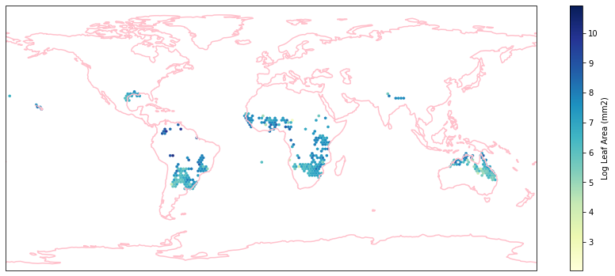
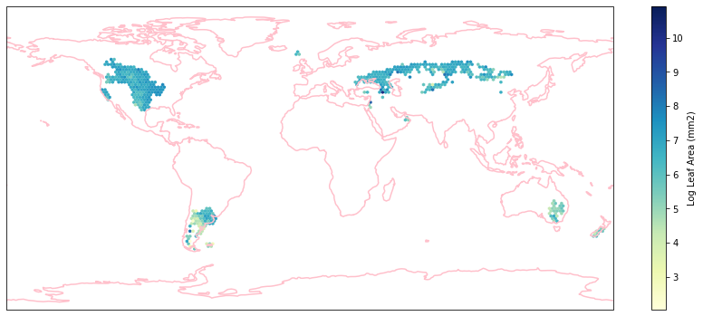
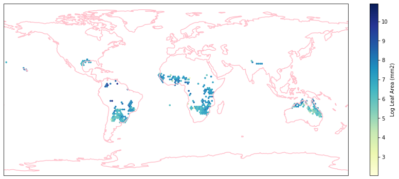
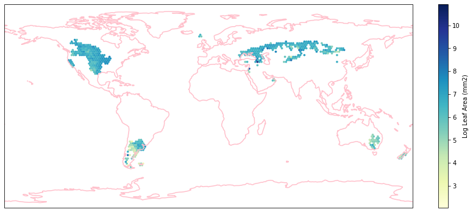
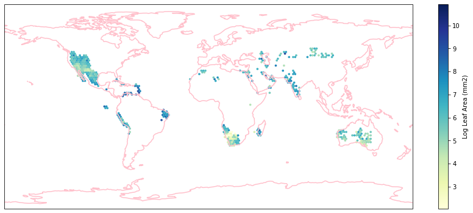
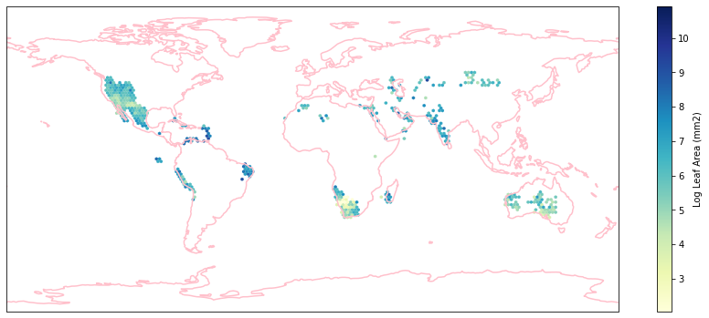

Differences among biomes
Contents
Differences among biomes¶
We want to determine if the differnces between iNaturalist observations and sPlotOpen cwm’s differ across different biomes.
This section covers:
Load WWF terrestrial ecoregions and biomes
Clip observations into biomes
Calculate grid means for each biome
Visualize differences in boxplot
Quantification Average Difference
# packages
import os
import pandas as pd
import numpy as np
import os
import matplotlib.pyplot as plt
import seaborn as sns
import matplotlib.ticker as ticker
from matplotlib.colors import LogNorm, Normalize
from matplotlib.ticker import MaxNLocator
import cartopy.crs as ccrs
import cartopy.feature as cfeature
from matplotlib.colors import BoundaryNorm
import geopandas as gpd
from geopandas.tools import sjoin
Load WWF biome data¶
We use the terrestrial biomes, as defined in the WWF terrestrial ecoregion map. The WWF terrestrial ecoregions shape files were downloaded from www.worldwildlife.org/publications/terrestrial-ecoregions-of-the-world.
wwf = gpd.read_file("WWF/wwf_terr_ecos.shp")
# remove arctic and antarctica
wwf = wwf[wwf["BIOME"] < 98]
wwf.head()
| OBJECTID | AREA | PERIMETER | ECO_NAME | REALM | BIOME | ECO_NUM | ECO_ID | ECO_SYM | GBL_STAT | ... | G200_BIOME | G200_STAT | Shape_Leng | Shape_Area | area_km2 | eco_code | PER_area | PER_area_1 | PER_area_2 | geometry | |
|---|---|---|---|---|---|---|---|---|---|---|---|---|---|---|---|---|---|---|---|---|---|
| 0 | 1 | 29.802942 | 0.219 | Northern Mesoamerican Pacific mangroves | NT | 14.0 | 4.0 | 61404.0 | 119.0 | 1.0 | ... | 0.0 | 0.0 | 0.219475 | 0.002769 | 8174 | NT1404 | 0.0 | 0.0 | 0.0 | POLYGON ((-112.26972 29.32648, -112.28809 29.3... |
| 1 | 2 | 11.977824 | 0.193 | Northern Mesoamerican Pacific mangroves | NT | 14.0 | 4.0 | 61404.0 | 119.0 | 1.0 | ... | 0.0 | 0.0 | 0.193289 | 0.001111 | 8174 | NT1404 | 0.0 | 0.0 | 0.0 | POLYGON ((-112.19907 29.17528, -112.20740 29.1... |
| 2 | 3 | 77301.372760 | 111.954 | Sinaloan dry forests | NT | 2.0 | 28.0 | 60228.0 | 98.0 | 1.0 | ... | 2.0 | 1.0 | 111.951414 | 6.879188 | 77362 | NT0228 | 0.0 | 0.0 | 0.0 | POLYGON ((-109.11700 27.74142, -109.11228 27.7... |
| 3 | 4 | 215.489182 | 1.274 | Northern Mesoamerican Pacific mangroves | NT | 14.0 | 4.0 | 61404.0 | 119.0 | 1.0 | ... | 0.0 | 0.0 | 1.273654 | 0.019701 | 8174 | NT1404 | 0.0 | 0.0 | 0.0 | POLYGON ((-110.54179 27.38383, -110.54462 27.3... |
| 4 | 5 | 19.639089 | 0.363 | Northern Mesoamerican Pacific mangroves | NT | 14.0 | 4.0 | 61404.0 | 119.0 | 1.0 | ... | 0.0 | 0.0 | 0.363068 | 0.001791 | 8174 | NT1404 | 0.0 | 0.0 | 0.0 | POLYGON ((-110.52850 27.28641, -110.53336 27.2... |
5 rows × 22 columns
Visualize biomes¶
wwf['BIOME_str'] = wwf['BIOME'].astype(str)
fig, ax = plt.subplots(figsize = (10,15))
wwf.plot(column='BIOME_str', ax=ax, cmap="tab20", legend=True);
Clip observations into biomes¶
Load iNaturalist and sPlotOpen observations¶
iNat_TRY = pd.read_csv("iNat_TRY_log.csv")
sPlot = pd.read_csv("sPlotOpen/cwm_loc.csv")
# make geopandas dataframes
# projection of wwf also in epsg:4326
geo_iNat = gpd.GeoDataFrame( iNat_TRY.iloc[:,:24], geometry=gpd.points_from_xy(iNat_TRY.decimalLongitude, iNat_TRY.decimalLatitude),
crs='epsg:4326')
geo_sPlot = gpd.GeoDataFrame(sPlot, geometry=gpd.points_from_xy(sPlot.Longitude, sPlot.Latitude), crs='epsg:4326')
Clip observations¶
We use the geopandas clip() function to select the observations within the geometry of each biome:
# groupby wwf biomes
biomes = wwf.dissolve(by='BIOME')
biomes['BIOME'] = biomes.index
# clip data into biomes
# run-time about 45 min.
iNat_with_biome = pd.DataFrame(columns=geo_iNat.columns)
iNat_with_biome['BIOME'] = []
for index, row in biomes.iterrows():
polygon = row['geometry'] #shape of biome
clipped = geo_iNat.clip(polygon) #select all observations within this shape
# add biome
clipped['BIOME'] = row['BIOME'] #add biome to corresponding observations
iNat_with_biome = pd.concat([iNat_with_biome, clipped])
sPlot_with_biome = pd.DataFrame(columns=geo_sPlot.columns)
sPlot_with_biome['BIOME'] = []
for index, row in biomes.iterrows():
polygon = row['geometry']
sPlot_clipped = geo_sPlot.clip(polygon)
# add biome
sPlot_clipped['BIOME'] = row['BIOME']
sPlot_with_biome = pd.concat([sPlot_with_biome, sPlot_clipped])
sPlot_with_biome.drop('geometry',axis=1).to_csv(r'sPlot_biomes.csv', index=False)
iNat_with_biome.drop('geometry',axis=1).to_csv(r'iNat_biomes.csv', index=False)
Calculate grid means for each biome¶
iNat_with_biome = pd.read_csv("iNat_biomes.csv")
sPlot_with_biome = pd.read_csv("sPlot_biomes.csv")
/net/home/swolf/.conda/envs/cartopy/lib/python3.8/site-packages/IPython/core/interactiveshell.py:3172: DtypeWarning: Columns (55) have mixed types.Specify dtype option on import or set low_memory=False.
has_raised = await self.run_ast_nodes(code_ast.body, cell_name,
wwf = gpd.read_file("WWF/wwf_terr_ecos.shp")
# remove arctic and antarctica
wwf = wwf[wwf["BIOME"] < 98]
iNat_with_biome.head()
| gbifID | scientificName | decimalLatitude | decimalLongitude | eventDate | dateIdentified | Dispersal unit length | Leaf Area | SLA | Leaf C | ... | Leaf N P ratio | Leaf P | Plant Height | Seed mass | Seed length | Seeds per rep. unit | Stem conduit density | SSD | Conduit element length | BIOME | |
|---|---|---|---|---|---|---|---|---|---|---|---|---|---|---|---|---|---|---|---|---|---|
| 0 | 1990599612 | Macaranga tanarius | 23.122994 | 120.534961 | 2019-01-25T14:51:00 | 2019-01-27T13:49:07 | NaN | 10.997687 | 2.848944 | NaN | ... | NaN | 1.064711 | 2.183426 | 3.427650 | NaN | NaN | NaN | -0.785087 | NaN | 1.0 |
| 1 | 1990599668 | Adiantum capillus-veneris | 23.123053 | 120.536422 | 2019-01-25T15:36:00 | 2019-01-27T14:22:54 | NaN | 4.088585 | 4.030621 | NaN | ... | NaN | -1.021651 | -1.213114 | -1.890699 | NaN | NaN | NaN | NaN | NaN | 1.0 |
| 2 | 1978441599 | Chloris barbata | 23.123362 | 120.183891 | 2018-12-16T17:21:58 | 2018-12-16T13:14:40 | NaN | NaN | NaN | NaN | ... | NaN | NaN | NaN | -1.565953 | NaN | NaN | NaN | NaN | NaN | 1.0 |
| 3 | 1883470731 | Adiantum capillus-veneris | 23.123363 | 120.536638 | 2018-03-11T11:48:00 | 2018-07-07T12:43:18 | NaN | 4.088585 | 4.030621 | NaN | ... | NaN | -1.021651 | -1.213114 | -1.890699 | NaN | NaN | NaN | NaN | NaN | 1.0 |
| 4 | 2242806671 | Dioscorea bulbifera | 23.123399 | 120.533835 | 2019-04-28T10:44:00 | 2019-05-03T12:45:18 | NaN | 5.093750 | 3.785888 | NaN | ... | NaN | NaN | NaN | 1.736951 | NaN | NaN | NaN | NaN | NaN | 1.0 |
5 rows × 25 columns
biome_types = sPlot_with_biome['BIOME'].unique().tolist()
def global_grid_data(df, long, lat, deg, variables):
# create new dataframe to save the average value of each grid cell and variable
grouped_df = pd.DataFrame()
# convert degree into step size
step = int((360/deg) + 1)
bins_x = np.linspace(-180,180,step)
bins_y= np.linspace(-90,90,int(((step - 1)/2)+1))
# group latitude and longitude coordinates into bins
# create new columns 'x_bin' and 'y_bin'
df['x_bin'] = pd.cut(df[long], bins=bins_x)
df['y_bin'] = pd.cut(df[lat], bins=bins_y)
# raster coordinates are in center of raster cell
df['x_bin'] = df['x_bin'].apply(lambda x: ((x.left + x.right) /2) )
df['y_bin'] = df['y_bin'].apply(lambda x: ((x.left + x.right) /2) )
grouped_df = df.drop_duplicates(subset=['x_bin', 'y_bin'], keep='last')
grouped_df = grouped_df[['x_bin', 'y_bin']]
for v in variables:
sub_df = df[['y_bin', 'x_bin', v]]
grouped_v = sub_df.groupby(['x_bin', 'y_bin'], as_index=False)[v].mean()
grouped_df = pd.merge(grouped_df, grouped_v,
on= ['x_bin', 'y_bin'],
how='left')
return grouped_df
trait = iNat_TRY.columns[6:24]
for i in biome_types:
# subset biome
iNat_sub = iNat_with_biome[iNat_with_biome['BIOME']==i]
sPlot_sub = sPlot_with_biome[sPlot_with_biome['BIOME']==i]
# get grid means
df_iNat = global_grid_data(iNat_sub, 'decimalLongitude', 'decimalLatitude', deg=2, variables=trait)
df_sPlot = global_grid_data(sPlot_sub, 'Longitude', 'Latitude', deg=2, variables=trait)
# reshape data, so that we have only one Trait column
df_iNat_t = df_iNat.melt(id_vars=["x_bin", "y_bin"],
value_name="TraitValue_iNat",
var_name="Trait")
df_sPlot_t = df_sPlot.melt(id_vars=["x_bin", "y_bin"],
value_name="TraitValue_sPlot",
var_name="Trait")
# merge sPlot and iNat data into one dataframe
df_merged = pd.merge(df_sPlot_t, df_iNat_t, on=["x_bin", "y_bin", "Trait"] )
# keep only lines where we have a pixel in both datasets
df_merged = df_merged.dropna()
# save result to csv
filename="WWF/grid_means_biome" + str(i) + "_2deg.csv"
df_merged.to_csv(filename, index=False)
Check work by plotting the different biomes:
for i in biome_types:
# cut iNaturalist into a grid based on latitude and longitude
iNat_with_biome_sub = iNat_with_biome[iNat_with_biome['BIOME']==i]
fig = plt.figure(figsize=(15, 15))
ax = plt.subplot(projection=ccrs.PlateCarree())
ax.coastlines(resolution='110m', color='pink', linewidth=1.5)
ax.set_extent([-180, 180, -90, 90], ccrs.PlateCarree())
hb = ax.hexbin(iNat_with_biome_sub['decimalLongitude'],
iNat_with_biome_sub['decimalLatitude'],
C=iNat_with_biome_sub['Leaf Area'],
reduce_C_function=np.mean,
mincnt=1,
gridsize=(200, 60),
cmap="YlGnBu",
transform=ccrs.PlateCarree(),
extent=[-180, 180, -90, 90],
linewidths=0.1,
vmin=iNat_TRY['Leaf Area'].quantile(0.01),
vmax=iNat_TRY['Leaf Area'].quantile(0.99))
cb = fig.colorbar(hb, ax=ax, shrink=0.41)
cb.set_label('Log Leaf Area (mm2)')
filename= "../Figures/biome_" + str(i) + "_leafarea.pdf"
plt.savefig(filename, bbox_inches='tight')


 





 


Visualize differences in boxplot¶
List of biome names in the WWF data:
ID |
Biome name |
|---|---|
1 |
Tropical and subtropical moist broadleaf forests |
2 |
Tropical and subtropical dry broadleaf forests |
3 |
Tropical and subtropical coniferous forests |
4 |
Temperate broadleaf and mixed forests |
5 |
Temperate Coniferous Forest |
6 |
Boreal forests / Taiga |
7 |
Tropical and subtropical grasslands, savannas and shrublands |
8 |
Temperate grasslands, savannas and shrublands |
9 |
Flooded grasslands and savannas |
10 |
Montane grasslands and shrublands |
11 |
Tundra |
12 |
Mediterranean Forests, woodlands and scrubs |
13 |
Deserts and xeric shrublands |
14 |
Mangroves |
Aggregate forest biomes into the three main categories¶
Tropical and subtropical forests
Temperate forests
Boreal forests/Taiga
def agg_biome (row):
if row['BIOME'] <= 3 :
return 'Tropical and subtropical forests'
if row['BIOME'] == 14 :
return 'Mangroves'
if row['BIOME'] == 9 :
return 'Flooded grasslands and savannas'
if row['BIOME'] == 7 :
return 'Tropical and subtropical grasslands, savannas and shrublands'
if row['BIOME'] == 13 :
return 'Deserts and xeric shrublands'
if row['BIOME'] == 12 :
return 'Mediterranean Forests, woodlands and shrubs'
if row['BIOME'] == 8 :
return 'Temperate grasslands, savannas and shrublands'
if row['BIOME'] in range(4, 6) :
return 'Temperate forests'
if row['BIOME'] == 6 :
return 'Boreal forests/Taiga'
if row['BIOME'] == 10 :
return 'Montane grasslands and shrublands'
if row['BIOME'] == 11 :
return 'Tundra'
# area and observations per biome
biome_types = [1.0,2.0,3.0,4.0,5.0,6.0,7.0,8.0,9.0,10.0,11.0,12.0,13.0,14.0]
biome_stats = pd.DataFrame(columns=["BIOME", "AREA", "iNat_Obs"])
for b in biome_types:
biome_wwf = wwf[wwf['BIOME']==b]
biome_area = biome_wwf['AREA'].sum()
biome_iNat = iNat_with_biome[iNat_with_biome['BIOME']==b]
biome_iNatobs = int(len(biome_iNat['BIOME']))
biome_sPlot = sPlot_with_biome[sPlot_with_biome['BIOME']==b]
biome_sPlotobs = int(len(biome_sPlot['BIOME']))
df = pd.DataFrame([[b, biome_area, biome_iNatobs, biome_sPlotobs]],
columns=["BIOME", "AREA", "iNat_Obs", "sPlot_Obs"])
biome_stats = biome_stats.append(df)
# add biome name
biome_stats['AggBiome'] = biome_stats.apply (lambda row: agg_biome(row), axis=1)
# calculate observation density per square km
biome_stats['iNat_Density'] = biome_stats['iNat_Obs']/biome_stats['AREA']
biome_stats['sPlot_Density'] = biome_stats['sPlot_Obs']/biome_stats['AREA']
# obs ratio:
biome_stats['Obs_Ratio'] = biome_stats['iNat_Density']/biome_stats['sPlot_Density']
biome_stats
| BIOME | AREA | iNat_Obs | sPlot_Obs | AggBiome | iNat_Density | sPlot_Density | Obs_Ratio | |
|---|---|---|---|---|---|---|---|---|
| 0 | 1.0 | 1.977546e+07 | 353149 | 8867.0 | Tropical and subtropical forests | 0.017858 | 0.000448 | 39.827337 |
| 0 | 2.0 | 3.009534e+06 | 86466 | 219.0 | Tropical and subtropical forests | 0.028731 | 0.000073 | 394.821918 |
| 0 | 3.0 | 7.092914e+05 | 76502 | 394.0 | Tropical and subtropical forests | 0.107857 | 0.000555 | 194.167513 |
| 0 | 4.0 | 1.283103e+07 | 5618093 | 25939.0 | Temperate forests | 0.437852 | 0.002022 | 216.58865 |
| 0 | 5.0 | 4.086175e+06 | 1427114 | 15716.0 | Temperate forests | 0.349254 | 0.003846 | 90.806439 |
| 0 | 6.0 | 1.512678e+07 | 351602 | 2961.0 | Boreal forests/Taiga | 0.023244 | 0.000196 | 118.744343 |
| 0 | 7.0 | 2.017755e+07 | 142568 | 7524.0 | Tropical and subtropical grasslands, savannas ... | 0.007066 | 0.000373 | 18.948432 |
| 0 | 8.0 | 1.010158e+07 | 1285220 | 5568.0 | Temperate grasslands, savannas and shrublands | 0.12723 | 0.000551 | 230.822557 |
| 0 | 9.0 | 1.091569e+06 | 29090 | 80.0 | Flooded grasslands and savannas | 0.02665 | 0.000073 | 363.625 |
| 0 | 10.0 | 5.187550e+06 | 79224 | 2993.0 | Montane grasslands and shrublands | 0.015272 | 0.000577 | 26.469763 |
| 0 | 11.0 | 1.165505e+07 | 46105 | 4152.0 | Tundra | 0.003956 | 0.000356 | 11.104287 |
| 0 | 12.0 | 3.220386e+06 | 1304318 | 6401.0 | Mediterranean Forests, woodlands and shrubs | 0.405019 | 0.001988 | 203.767849 |
| 0 | 13.0 | 2.788568e+07 | 587003 | 12446.0 | Deserts and xeric shrublands | 0.02105 | 0.000446 | 47.163988 |
| 0 | 14.0 | 3.464320e+05 | 14116 | 16.0 | Mangroves | 0.040747 | 0.000046 | 882.25 |
Aggregate different forest types¶
Aggregate tropical/temperate forest types and tropical/temperate grassland types
agg_biomes2 = biome_stats.groupby('AggBiome')['iNat_Obs'].sum()
agg_biomes1 = biome_stats.groupby('AggBiome', as_index =False)['AREA'].sum()
agg_biomes2 = biome_stats.groupby('AggBiome', as_index =False)['iNat_Obs'].sum()
agg_biomes = pd.concat([agg_biomes1, agg_biomes2["iNat_Obs"]], axis=1)
agg_biomes['Obs_Density'] = agg_biomes['iNat_Obs']/agg_biomes['AREA']
agg_biomes = agg_biomes.set_index('AggBiome')
agg_biomes
| AREA | iNat_Obs | Obs_Density | |
|---|---|---|---|
| AggBiome | |||
| Boreal forests/Taiga | 1.512678e+07 | 351602 | 0.023244 |
| Deserts and xeric shrublands | 2.788568e+07 | 587003 | 0.021050 |
| Flooded grasslands and savannas | 1.091569e+06 | 29090 | 0.026650 |
| Mangroves | 3.464320e+05 | 14116 | 0.040747 |
| Mediterranean Forests, woodlands and shrubs | 3.220386e+06 | 1304318 | 0.405019 |
| Montane grasslands and shrublands | 5.187550e+06 | 79224 | 0.015272 |
| Temperate forests | 1.691720e+07 | 7045207 | 0.416452 |
| Temperate grasslands, savannas and shrublands | 1.010158e+07 | 1285220 | 0.127230 |
| Tropical and subtropical forests | 2.349428e+07 | 516117 | 0.021968 |
| Tropical and subtropical grasslands, savannas and shrublands | 2.017755e+07 | 142568 | 0.007066 |
| Tundra | 1.165505e+07 | 46105 | 0.003956 |
Normalize trait means¶
def quantile_norm(df, s1, s2, variables):
# empty data frame to save output:
df_norm = pd.DataFrame()
for v in variables:
# make subset df
sub_exp = df[df['Trait']==v]
sub_exp[s1] = np.exp(sub_exp[s1].copy())
sub_exp[s2] = np.exp(sub_exp[s2].copy())
# determine min and max values
min_quantile = sub_exp[s1].quantile(0.05)
max_quantile = sub_exp[s1].quantile(0.95)
if min_quantile > sub_exp[s2].quantile(0.05):
min_quantile = sub_exp[s2].quantile(0.05)
if max_quantile < sub_exp[s2].quantile(0.95):
max_quantile = sub_exp[s2].quantile(0.95)
sub_exp[s1] = sub_exp[s1].apply(lambda x: (x - min_quantile)/(max_quantile - min_quantile))
sub_exp[s2] = sub_exp[s2].apply(lambda x: (x - min_quantile)/(max_quantile - min_quantile))
df_norm = pd.concat([df_norm, sub_exp])
return df_norm
# init new df
raster_means_all = pd.DataFrame(columns=["x_bin","y_bin","Trait","TraitValue_sPlot","TraitValue_iNat","BIOME"])
for b in biome_types:
filename="WWF/grid_means_biome" + str(b) + "_2deg.csv"
raster_means = pd.read_csv(filename)
# normalize trait measurements
raster_means_biome = quantile_norm(raster_means, "TraitValue_sPlot", "TraitValue_iNat", trait)
raster_means_biome['BIOME'] = b
raster_means_all = pd.concat([raster_means_all, raster_means_biome])
Calculate difference between iNaturalist and sPlot maps (trait values all normalized):
raster_means_all['Difference'] = raster_means_all['TraitValue_iNat'] - raster_means_all['TraitValue_sPlot']
raster_means_all['AggBiome'] = raster_means_all.apply (lambda row: agg_biome(row), axis=1)
raster_means_all
| x_bin | y_bin | Trait | TraitValue_sPlot | TraitValue_iNat | BIOME | Difference | AggBiome | |
|---|---|---|---|---|---|---|---|---|
| 0 | 149.0 | -21.0 | Dispersal unit length | 0.368411 | 0.307410 | 1.0 | -0.061001 | Tropical and subtropical forests |
| 1 | 167.0 | -21.0 | Dispersal unit length | 0.988748 | 0.134547 | 1.0 | -0.854201 | Tropical and subtropical forests |
| 2 | 121.0 | 25.0 | Dispersal unit length | 0.645304 | 0.179513 | 1.0 | -0.465791 | Tropical and subtropical forests |
| 3 | 101.0 | 3.0 | Dispersal unit length | 1.053881 | 0.182566 | 1.0 | -0.871315 | Tropical and subtropical forests |
| 4 | 99.0 | 7.0 | Dispersal unit length | 0.351987 | 0.047709 | 1.0 | -0.304278 | Tropical and subtropical forests |
| ... | ... | ... | ... | ... | ... | ... | ... | ... |
| 21 | -49.0 | -27.0 | Seeds per rep. unit | 1.000000 | 0.000000 | 14.0 | -1.000000 | Mangroves |
| 22 | 101.0 | 7.0 | Stem conduit density | 0.231082 | 0.956061 | 14.0 | 0.724979 | Mangroves |
| 23 | -49.0 | -27.0 | Stem conduit density | 1.040469 | -0.050319 | 14.0 | -1.090788 | Mangroves |
| 24 | 101.0 | 7.0 | SSD | 0.015586 | 1.055556 | 14.0 | 1.039970 | Mangroves |
| 25 | -49.0 | -27.0 | SSD | 0.546889 | -0.055556 | 14.0 | -0.602445 | Mangroves |
20860 rows × 8 columns
raster_means_all.to_csv('raster_means_biomes_all_traits.csv', index=False)
Plot differences in boxplot¶
raster_means_all = pd.read_csv("raster_means_biomes_all_traits.csv")
def plot_boxplot(x, y, hue, data, xticklabels, xlabel, ylabel):
sns.set_theme(style="white")
colors = ['firebrick','cyan', 'slateblue', 'magenta','darkseagreen','pink','lavender']
ax = sns.boxplot(x=x,
y=y,
hue=hue,
data=filtered_raster_means_all,
palette=colors,
showfliers = False,
#showmeans=True,
linewidth = 0.8,
meanprops={"marker":"o","markerfacecolor":"white", "markeredgecolor":"blue"}
)
ax.set(xticklabels=xticklabels)
plt.legend(ncol=7, loc='upper left')
# add reference line at y=0
ax.axhline(0, ls='--', linewidth=1, color='black')
# rotate x-axis labels for readability
ax.set_xticklabels(ax.get_xticklabels(), rotation=50, ha="right")
plt.ylabel(ylabel)
plt.xlabel(xlabel)
plt.tight_layout()
Plot Differences for top traits as boxplot:
value_list = ['Leaf Area', 'SLA',
'Leaf fresh mass', 'Leaf N per area', 'Plant Height',
'Seed mass',
'Stem conduit density']
xticklabels =["Tropical and subtropical \n moist broadleaf forests",
"Tropical and subtropical \n dry broadleaf forests",
"Tropical and subtropical \n coniferous forests",
"Temperate broadleaf \n and mixed forests",
"Temperate Coniferous Forest",
"Boreal forests / Taiga",
"Tropical and subtropical \n grasslands, savannas \n and shrublands",
"Temperate grasslands, \n savannas and shrublands",
"Flooded grasslands \n and savannas",
"Montane grasslands \n and shrublands",
"Tundra",
"Mediterranean Forests, \n woodlands and shrubs",
"Deserts and \n xeric shrublands","Mangroves"]
boolean_series = raster_means_all.Trait.isin(value_list)
filtered_raster_means_all = raster_means_all[boolean_series]
# set figure size
sns.set(rc={'figure.figsize':(15,9)})
# plot
plot_boxplot(x="BIOME",y="Difference", hue="Trait", data=filtered_raster_means_all, xticklabels=xticklabels,
ylabel= "Scaled Difference (iNaturalist - sPlotOpen)", xlabel="Biome")
plt.savefig('../Figures/wwf_difference_all_7.pdf', bbox_inches='tight')
Aggregate the forests in to the 3 main categories:
# Difference
value_list = ['Leaf Area', 'SLA',
'Leaf fresh mass', 'Leaf N per area', 'Plant Height',
'Seed mass',
'Stem conduit density']
xticklabels =["Tropical and \n subtropical forests \n d=" +
str(round(agg_biomes['Obs_Density'].loc[['Tropical and subtropical forests']][0], 3)),
"Temperate forests \n d=" +
str(round(agg_biomes['Obs_Density'].loc[['Temperate forests']][0], 3)),
"Boreal forests/Taiga \n d=" +
str(round(agg_biomes['Obs_Density'].loc[['Boreal forests/Taiga']][0], 3)),
"Tropical and subtropical \n grasslands, savannas \n and shrublands \n d=" +
str(round(agg_biomes['Obs_Density'].loc[['Tropical and subtropical grasslands, savannas and shrublands']][0], 3)),
"Temperate grasslands, \n savannas and shrublands \n d=" +
str(round(agg_biomes['Obs_Density'].loc[['Temperate grasslands, savannas and shrublands']][0], 3)),
"Montane grasslands \n and shrublands \n d=" +
str(round(agg_biomes['Obs_Density'].loc[['Montane grasslands and shrublands']][0], 3)),
"Tundra \n d=" +
str(round(agg_biomes['Obs_Density'].loc[['Tundra']][0], 3)),
"Mediterranean Forests, \n woodlands and shrubs \n d=" +
str(round(agg_biomes['Obs_Density'].loc[['Mediterranean Forests, woodlands and shrubs']][0], 3)),
"Deserts and \n xeric shrublands\n d=" +
str(round(agg_biomes['Obs_Density'].loc[['Deserts and xeric shrublands']][0], 3))]
order = ["Tropical and subtropical forests",
"Tropical and subtropical grasslands, savannas and shrublands",
"Deserts and xeric shrublands",
"Montane grasslands and shrublands",
"Mediterranean Forests, woodlands and shrubs",
"Temperate forests",
"Temperate grasslands, savannas and shrublands",
"Boreal forests/Taiga",
"Tundra"]
boolean_series = raster_means_all.Trait.isin(value_list)
filtered_raster_means_all = raster_means_all[boolean_series]
boolean_series = filtered_raster_means_all.AggBiome.isin(order)
filtered_raster_means_all = filtered_raster_means_all[boolean_series]
# set figure size
sns.set(rc={'figure.figsize':(14,8.3)})
# plot
plot_boxplot(x="AggBiome",y="Difference", hue="Trait", data=filtered_raster_means_all, xticklabels=xticklabels,
xlabel = "Biome and observation density (observation/km$^2$)",
ylabel = "Scaled Difference (iNaturalist - sPlotOpen)")
plt.savefig('../Figures/wwf_biomes_aggr_7.pdf', bbox_inches='tight', transparent=True)
Quantify average difference¶
raster_means_all = pd.read_csv("raster_means_biomes_all_traits.csv")
trait = ['Leaf Area', 'SLA',
'Leaf fresh mass', 'Leaf N per area', 'Plant Height',
'Seed mass',
'Stem conduit density']
boolean_series = raster_means_all.Trait.isin(value_list)
filtered_raster_means_all = raster_means_all[boolean_series]
pd.set_option('display.max_rows', None)
medians= pd.DataFrame(filtered_raster_means_all.groupby(['AggBiome', 'Trait']).median()['Difference'])
medians.head()
| Difference | ||
|---|---|---|
| AggBiome | Trait | |
| Boreal forests/Taiga | Leaf Area | 0.189220 |
| Leaf N per area | -0.198705 | |
| Leaf fresh mass | 0.148177 | |
| Plant Height | 0.006025 | |
| SLA | 0.375851 |
medians = medians.reset_index(level=['AggBiome', 'Trait'])
Medians per trop trait in each biome:
medians = medians.pivot_table(index ='AggBiome', columns = 'Trait',
values = 'Difference')
medians.loc["All Biomes"] = list(filtered_raster_means_all.groupby(['Trait']).median()['Difference'])
medians
| Trait | Leaf Area | Leaf N per area | Leaf fresh mass | Plant Height | SLA | Seed mass | Stem conduit density |
|---|---|---|---|---|---|---|---|
| AggBiome | |||||||
| Boreal forests/Taiga | 0.189220 | -0.198705 | 0.148177 | 0.006025 | 0.375851 | 0.224411 | 0.093886 |
| Deserts and xeric shrublands | 0.061735 | 0.093049 | 0.141257 | 0.035254 | 0.016465 | 0.028652 | -0.001412 |
| Flooded grasslands and savannas | -0.653303 | 1.000000 | 1.000000 | -0.397079 | 0.525346 | -0.431093 | -1.000000 |
| Mangroves | 0.537941 | -1.000000 | -1.000000 | 0.326003 | -0.123916 | 0.388160 | -0.182905 |
| Mediterranean Forests, woodlands and shrubs | 0.015451 | 0.080470 | 0.139528 | -0.013588 | 0.006157 | 0.064718 | 0.122965 |
| Montane grasslands and shrublands | 0.006176 | 0.125810 | 0.017283 | 0.007673 | -0.018235 | 0.010105 | 0.137477 |
| Temperate forests | 0.151391 | -0.058464 | 0.175030 | -0.015376 | 0.263396 | 0.003792 | 0.152510 |
| Temperate grasslands, savannas and shrublands | 0.183634 | 0.024759 | 0.147126 | 0.018820 | 0.187566 | 0.099922 | 0.220428 |
| Tropical and subtropical forests | 0.047930 | -0.147661 | 0.206381 | -0.317911 | 0.298611 | -0.129097 | -0.025443 |
| Tropical and subtropical grasslands, savannas and shrublands | 0.111476 | 0.127223 | 0.146743 | 0.014482 | -0.026321 | 0.013448 | -0.200285 |
| Tundra | -0.004413 | -0.126408 | 0.075224 | -0.049303 | 0.361460 | 0.060816 | 0.380545 |
| All Biomes | 0.105566 | -0.017394 | 0.154838 | -0.012568 | 0.201795 | 0.013627 | 0.113133 |
medians = medians.round(2)
print(medians.to_latex(index=True))
\begin{tabular}{lrrrrrrr}
\toprule
Trait & Leaf Area & Leaf N per area & Leaf fresh mass & Plant Height & SLA & Seed mass & Stem conduit density \\
AggBiome & & & & & & & \\
\midrule
Boreal forests/Taiga & 0.19 & -0.20 & 0.15 & 0.01 & 0.38 & 0.22 & 0.09 \\
Deserts and xeric shrublands & 0.06 & 0.09 & 0.14 & 0.04 & 0.02 & 0.03 & -0.00 \\
Flooded grasslands and savannas & -0.65 & 1.00 & 1.00 & -0.40 & 0.53 & -0.43 & -1.00 \\
Mangroves & 0.54 & -1.00 & -1.00 & 0.33 & -0.12 & 0.39 & -0.18 \\
Mediterranean Forests, woodlands and shrubs & 0.02 & 0.08 & 0.14 & -0.01 & 0.01 & 0.06 & 0.12 \\
Montane grasslands and shrublands & 0.01 & 0.13 & 0.02 & 0.01 & -0.02 & 0.01 & 0.14 \\
Temperate forests & 0.15 & -0.06 & 0.18 & -0.02 & 0.26 & 0.00 & 0.15 \\
Temperate grasslands, savannas and shrublands & 0.18 & 0.02 & 0.15 & 0.02 & 0.19 & 0.10 & 0.22 \\
Tropical and subtropical forests & 0.05 & -0.15 & 0.21 & -0.32 & 0.30 & -0.13 & -0.03 \\
Tropical and subtropical grasslands, savannas a... & 0.11 & 0.13 & 0.15 & 0.01 & -0.03 & 0.01 & -0.20 \\
Tundra & -0.00 & -0.13 & 0.08 & -0.05 & 0.36 & 0.06 & 0.38 \\
All Biomes & 0.11 & -0.02 & 0.15 & -0.01 & 0.20 & 0.01 & 0.11 \\
\bottomrule
\end{tabular}